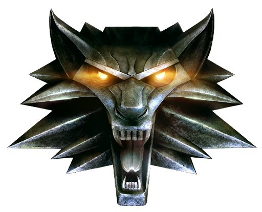

Экшен
(action в переводе с англ.«действие») — жанр компьютерных игр,
в котором делается упор на эксплуатацию физических возможностей игрока,
в том числе координации глаз и рук и скорости реакции.
| Название игры |
Логотип |
Описание |
| Mass Effect: Andromeda |
|
Mass Effect: Andromeda - это самостоятельная игра во
вселенной Mass Effect, действие которой разворачивается во время
событий оригинальной трилогии в совершенно другом конце галактики.
Игроков ждут полностью новая команда, корабль и новые возможности. Цель
игроков простая - раскрыть тайны системы, куда прилетели колонизаторы,
и основать полноценную колонию на одной из нескольких потенциально
пригодных для жизни планет.
|
| The Witcher 3: Wild Hunt |
 |
Действие игры происходит в вымышленном фэнтезийном
мире, напоминающем средневековую Европу. Главный герой Геральт из
Ривии, «ведьмак» — профессиональный охотник на чудовищ — отправляется в
путешествие в поисках девушки по имени Цири, обладающей
сверхъестественными способностями. В отличие от предыдущих игр серии,
«Ведьмак 3: Дикая Охота» — игра с открытым миром: игрок может свободно
путешествовать по обширным территориям, самостоятельно находя новые
места и задания.
|
| Assasin's Creed: Odyssey |
 |
Assassin's Creed Odyssey меняет египетский антураж и
переносит нас с вами на просторы Древней Греции, где мы напишем
собственную эпическую одиссею и создадим свое уникальное приключение.
Ключевые элементы, такие как паркур и внезапные убийства при помощи
спрятанного клинка или ядовитых ножей остались незыблемыми, однако сам
геймплей ушел в сторону PRG.
|
 Экшен
Экшен